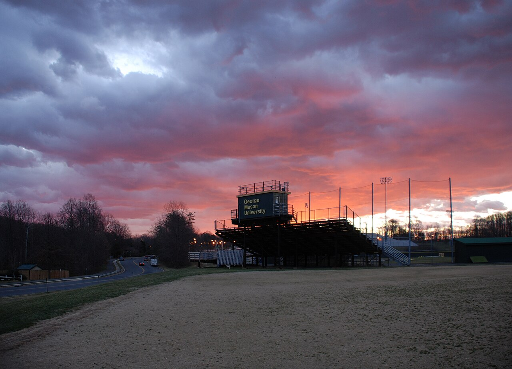

본교
조지메이슨대학교 본교 (페어팩스 캠퍼스)
미국 버지니아주 페어팩스

George Mason University Korea
2027 봄학기 · 문과 입학 정리
미국 버지니아주 페어팩스

인천 연수구 송도문화로 119-4 (인천글로벌캠퍼스)
출처: 조지메이슨대 한국캠퍼스 학위 목록 (https://masonkorea.gmu.edu/degrees) · 각 전공 페이지 (https://masonkorea.gmu.edu/programs/...) · 페어팩스 이동 규정 (https://masonkorea.gmu.edu/campus-transition/fairfax-transition-procedures/overview) · 정리일: 2026-11-26
전형 일정, 서류, 영어 기준, 학비, 장학금은 이공계 정리와 같음 →../한국조지메이슨대학교/조지메이슨대_입시요강_2027.md참고
지원 전에 반드시 공식 홈페이지에서 최신 내용을 다시 확인할 것.
한국캠퍼스 학부 학위 8개 중 계산·데이터과학(BS)을 뺀 7개가 문과·예술 계열 → 네 학교 중 문과 선택지가 가장 넓음
| 학과 | 학위 | 계열 |
|---|---|---|
| 경영학과 (Business) | BS | 경영 |
| 분쟁분석·해결학과 (Conflict Analysis and Resolution) | BA / BS | 사회과학 |
| 경제학과 (Economics) | BA / BS | 사회과학 |
| 국제학과 (Global Affairs) | BA | 사회과학·국제 |
| 컴퓨터게임디자인과 (Computer Game Design) | BFA | 예술 (코딩 포함) |
| (참고) 계산·데이터과학과 (CDS) | BS | 이공계 |
| BA | BS | |
|---|---|---|
| 특징 | 사회과학·인문학 도구 활용 · 외국어 1개 중급 이상 필수 | 같은 핵심 과목 + 계량 연구방법 강화 · 외국어 필수 아님 |
| 진로 | 정부, 학계, 연구, 재단, NGO·사회 분야 | 기술, 기업, 연구·데이터 분석, 컨설팅, 교육 |
| BA | BS | |
|---|---|---|
| 특징 | 교양 중심 · 비판적 사고 | 계량 분석 중심 |
| 진로 | 로스쿨, 경영·행정 대학원 | 정부·컨설팅·민간 분석가, 경제학·계량경영 대학원 |
| 항목 | 내용 |
|---|---|
| 문과라서 생기는 제한 | 없음 — 게임디자인 외에는 학과별 추가 서류 없음 |
| 입학 커리큘럼 | 영어 실력에 따라 Direct(바로 입학) / PPP(영어 지원 병행) / MK Way |
| 영어 기준 | 수능 영어 1등급 → Direct, 2등급 → PPP (또는 TOEFL·IELTS·Duolingo·Versant) · 해당 연도 수능만 인정 |
| 필수 서류 | 영문 성적증명서 (봉인 원본 우편 또는 학교 공식 이메일), 영어 성적, 영문 자기소개서 A4 1~2장 |
| 선택 서류 | 영문 추천서, 생활기록부 + 영문 요약 1장, 상장, SAT/ACT |
| 일정 | 1차 마감 지남 / 최종 마감 2027.02.01 · 결과 4~5주 |
| 원서료 | US$80 |
| 수업료 | 학기당 US$10,000 |